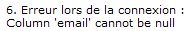
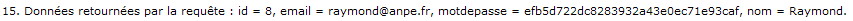
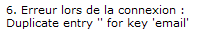
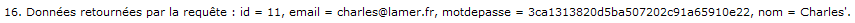

Nous allons, pour commencer, découvrir les nouveaux objets et interfaces qui doivent intervenir dans notre application afin d'établir une communication avec la base de données. Nous apprendrons ensuite à lire des données depuis la base vers notre application, et enfin à écrire des données depuis notre application vers la base.
Une fois la théorie assimilée, nous mettrons tout cela en musique dans un exemple pratique, avant d'analyser les manques et risques liés à la technique employée, et de découvrir une seconde manière de procéder qui pallie ces lacunes.
Chargement du driver
Nous avons, dans le chapitre précédent, récupéré le driver JDBC correspondant à MySQL, et nous l'avons ajouté au classpath du projet. Il nous est maintenant nécessaire de procéder à ce que l'on nomme le chargement du driver depuis le code de notre application. Voici le code minimal nécessaire :
/* Chargement du driver JDBC pour MySQL */
try {
Class.forName( "com.mysql.jdbc.Driver" );
} catch ( ClassNotFoundException e ) {
/* Gérer les éventuelles erreurs ici. */
}Intéressons-nous à la ligne 3 de notre exemple, dont le rôle est justement de charger le driver. Le nom de ce dernier, en l'occurrence "com.mysql.jdbc.Driver", est fourni par son constructeur, autrement dit ici par MySQL. Si vous utilisez un autre SGBD, vous devrez vous renseigner sur le site de son distributeur pour trouver son nom exact et ainsi pouvoir le charger depuis votre application.
Si cette ligne de code envoie une exception de type ClassNotFoundException, cela signifie que le fichier .jar contenant le driver JDBC pour MySQL n'a pas été correctement placé dans le classpath. Vous pourrez d'ailleurs faire le test vous-mêmes lorsque nous passerons à la pratique, en retirant le driver que nous avons ajouté en tant que bibliothèque externe, et constater que cette ligne envoie bien une exception ! ;)
Nous allons maintenant apprendre à communiquer avec une base de données. Pour ce faire, nous devons suivre le processus suivant :
nous connecter à la base ;
créer et exécuter une requête SQL ;
analyser son résultat ;
fermer les différentes ressources mises en jeu.
Sans plus attendre, découvrons tout cela en détail !
Connexion à la base, création et exécution d'une requête
Le contenu qui va suivre est assez dense, mais il faut bien passer par la théorie pour comprendre. Pas de panique si vous n'assimilez pas tout ce que je vous présente ici, la partie suivante de ce chapitre est entièrement consacrée à la pratique ! Nous allons commencer par étudier la syntaxe et les objets à mettre en œuvre, puis nous appliquerons ensuite tout cela à travers un petit scénario de tests.
Connexion à la base de données
Identification de l'URL
Pour nous connecter à la base de données MySQL depuis notre application Java, nous avons besoin d'une URL spécifique à JDBC, qui respecte la syntaxe générale suivante :
jdbc:mysql://nomhote:port/nombddDans cette adresse, vous remarquez plusieurs sections :
nomhote : le nom de l'hôte sur lequel le serveur MySQL est installé. S'il est en place sur la même machine que l'application Java exécutée, alors vous pouvez simplement spécifier localhost. Cela peut également être une adresse IP comme 127.0.0.1. Au passage, si vous rencontrez des problèmes de connectivité en spécifiant localhost et que l'utilisation de 127.0.0.1 à la place les résout, alors vous avez un souci de configuration réseau (DNS, hosts, etc.) ;
port : le port TCP/IP écouté par votre serveur MySQL. Par défaut, il s'agit du port 3306 ;
nombdd : le nom de la base de données à laquelle vous souhaitez vous connecter. En l'occurrence, il s'agira pour nous de bdd_sdzee.
Ainsi, puisque notre serveur MySQL est installé sur le même poste que notre serveur d'applications, l'URL finale sera dans notre cas :
jdbc:mysql://localhost:3306/bdd_sdzeeÉtudions maintenant la mise en place de la connexion entre notre application et notre base.
Établissement de la connexion
Après le chargement du driver, nous pouvons tenter d'établir une connexion avec notre base de données :
/* Connexion à la base de données */
String url = "jdbc:mysql://localhost:3306/bdd_sdzee";
String utilisateur = "java";
String motDePasse = "$dZ_£E";
Connection connexion = null;
try {
connexion = DriverManager.getConnection( url, utilisateur, motDePasse );
/* Ici, nous placerons nos requêtes vers la BDD */
/* ... */
} catch ( SQLException e ) {
/* Gérer les éventuelles erreurs ici */
} finally {
if ( connexion != null )
try {
/* Fermeture de la connexion */
connexion.close();
} catch ( SQLException ignore ) {
/* Si une erreur survient lors de la fermeture, il suffit de l'ignorer. */
}
}L'établissement d'une connexion s'effectue à travers l'objet DriverManager. Il suffit d'appeler sa méthode statique getConnection() pour récupérer un objet de type Connection. Comme vous pouvez le voir ici, celle-ci prend en argument l'adresse de la base de données, le nom d'utilisateur et le mot de passe associé.
L'appel à cette méthode peut retourner des erreurs de type SQLException :
si une erreur SQLException: No suitable driver est envoyée, alors cela signifie que le driver JDBC n'a pas été chargé ou que l'URL n'a été reconnue par aucun des drivers chargés par votre application ;
si une erreur SQLException: Connection refused ou Connection timed out ou encore CommunicationsException: Communications link failure est envoyée, alors cela signifie que la base de données n'est pas joignable.
Si un de ces derniers cas survient, vous trouverez ci-dessous une liste des causes possibles et les pistes de résolution associées :
Cause éventuelle | Piste de résolution |
|---|---|
Le serveur MySQL est éteint ? | Démarrez le serveur MySQL... |
Le numéro de port dans l'URL est manquant ou incorrect ? | Ouvrez le fichier de configuration my.cnf de votre serveur MySQL, et vérifiez le port qui y est spécifié. |
Le nom d'hôte ou l'adresse IP dans l'URL est incorrect(e) ? | Testez la connectivité en effectuant un simple |
Le serveur MySQL n'accepte pas de connexions TCP/IP ? | Vérifiez que MySQL a été lancé sans l'option |
Il n'y a plus aucune connexion disponible sur le serveur MySQL ? | Redémarrez MySQL, et corrigez le code de votre application pour qu'il libère les connexions efficacement. |
Quelque chose entre l'application Java et le serveur MySQL bloque la connexion, comme un pare-feu ou un proxy ? | Configurez votre pare-feu et/ou proxy pour qu'il(s) autorise(nt) le port écouté par votre serveur MySQL. |
Le nom d'hôte dans l'URL n'est pas reconnu par votre serveur DNS local ? | Utilisez l'adresse IP dans l'URL au lieu du nom d'hôte, ou actualisez si possible votre DNS. |
Enfin, peu importe que la connexion ait réussi ou non, retenez bien que sa fermeture dans un bloc finally est extrêmement importante !
Nous n'allons pas entrer dans les détails pour le moment, puisque nous n'en sommes qu'au début de notre apprentissage, mais sachez d'ores et déjà que l'ouverture d'une connexion a un coût non négligeable en termes de performances. Dans une application très fréquentée, il devient hors de question de procéder à des ouvertures/fermetures à chaque requête effectuée, cela reviendrait à signer l'arrêt de mort de votre serveur ! Nous y reviendrons en temps voulu, pas d'inquiétudes. :)
Création d'une requête
Avant de pouvoir créer des instructions SQL, vous devez tout d'abord créer un objet de type Statement. Si vous parcourez sa documentation, vous constaterez qu'il s'agit en réalité d'une interface dont le rôle est de permettre l'exécution de requêtes. Pour initialiser cet objet, rien de plus simple, il suffit d'appeler la méthode createStatement() de l'objet Connection précédemment obtenu ! Donc si nous reprenons notre exemple, juste après l'établissement de la connexion dans notre bloc try, nous devons ajouter le code suivant :
/* Création de l'objet gérant les requêtes */
Statement statement = connexion.createStatement();Exécution de la requête
Une fois l'objet Statement initialisé, il devient alors possible d'exécuter une requête. Pour ce faire, celui-ci met à votre disposition toute une série de méthodes, notamment les deux suivantes :
executeQuery(): cette méthode est dédiée à la lecture de données via une requête de typeSELECT;executeUpdate(): cette méthode est réservée à l'exécution de requêtes ayant un effet sur la base de données (écriture ou suppression), typiquement les requêtes de typeINSERT,UPDATE,DELETE, etc.
En outre, il existe des variantes de chaque méthode prenant en compte d'autres arguments, ainsi que deux autres méthodes nommées execute() et executeBatch(). Nous n'allons pas nous attarder sur les subtilités mises en jeu, je vous laisse le soin de lire la documentation de l'objet Statement si vous souhaitez en savoir davantage.
Exécution d'une requête de lecture
En parcourant la documentation de la méthode executeQuery(), nous apprenons qu'elle retourne un objet de type ResultSet contenant le résultat de la requête. Voici donc un exemple effectuant un SELECT sur notre table d'utilisateurs :
/* Exécution d'une requête de lecture */
ResultSet resultat = statement.executeQuery( "SELECT id, email, mot_de_passe, nom FROM Utilisateur;" );Avant d'apprendre à récupérer et analyser le résultat retourné par cet appel, regardons comment effectuer une requête d'écriture dans la base.
Exécution d'une requête d'écriture
En parcourant cette fois la documentation de la méthode executeUpdate(), nous apprenons qu'elle retourne un entier représentant le nombre de lignes affectées par la requête réalisée. Si par exemple vous réalisez une insertion de données via un INSERT, cette méthode retournera 0 en cas d'échec et 1 en cas de succès. Si vous réalisez une mise à jour via un UPDATE, cette méthode retournera le nombre de lignes mises à jour. Idem en cas d'une suppression via un DELETE, etc.
Je vous propose ici un exemple effectuant un INSERT sur notre table d'utilisateurs :
/* Exécution d'une requête d'écriture */
int statut = statement.executeUpdate( "INSERT INTO Utilisateur (email, mot_de_passe, nom, date_inscription) VALUES ('jmarc@mail.fr', MD5('lavieestbelle78'), 'jean-marc', NOW());" );Avant de pouvoir tester ces deux méthodes, il nous faut encore découvrir comment manipuler les résultats retournés.
Accès aux résultats de la requête
Retour d'une requête de lecture
Je vous l'ai déjà soufflé, l'exécution d'une requête de lecture via la méthode statement.executeQuery() retourne un objet de type ResultSet. Vous pouvez le voir comme un tableau, qui contient les éventuelles données retournées par la base de données sous forme de lignes. Pour accéder à ces lignes de données, vous avez à votre disposition un curseur, que vous pouvez déplacer de ligne en ligne. Notez bien qu'il ne s'agit pas d'un curseur au sens base de données du terme, mais bien d'un curseur propre à l'objet ResultSet. Voyons cela dans un exemple, puis commentons :
/* Exécution d'une requête de lecture */
ResultSet resultat = statement.executeQuery( "SELECT id, email, mot_de_passe, nom FROM Utilisateur;" );
/* Récupération des données du résultat de la requête de lecture */
while ( resultat.next() ) {
int idUtilisateur = resultat.getInt( "id" );
String emailUtilisateur = resultat.getString( "email" );
String motDePasseUtilisateur = resultat.getString( "mot_de_passe" );
String nomUtilisateur = resultat.getString( "nom" );
/* Traiter ici les valeurs récupérées. */
}Pour commencer, à la ligne 2 nous récupérons le retour de l'appel à la méthode statement.executeQuery() dans un objet ResultSet.
Ensuite, afin de pouvoir accéder aux lignes contenues dans cet objet, nous effectuons un appel à la méthode next(), qui permet de déplacer le curseur à la ligne suivante. Elle retourne un booléen, initialisé à true tant qu'il reste des données à parcourir.
Pourquoi ne lisons-nous pas la première ligne avant de déplacer le curseur à la ligne suivante ?
Tout simplement parce que lors de la création d'un objet ResultSet, son curseur est par défaut positionné avant la première ligne de données. Ainsi, il est nécessaire de se déplacer d'un cran vers l'avant pour pouvoir commencer à lire les données contenues dans l'objet.
Une fois le curseur positionné correctement, il ne nous reste plus qu'à récupérer les contenus des différents champs via une des nombreuses méthodes de récupération proposées par l'objet ResultSet. Je ne vais pas vous en faire la liste exhaustive, je vous laisse parcourir la documentation pour les découvrir en intégralité. Sachez simplement qu'il en existe une par type de données récupérables :
une méthode
resultat.getInt()pour récupérer un entier ;une méthode
resultat.getString()pour récupérer une chaîne de caractères ;une méthode
resultat.getBoolean()pour récupérer un booléen ;etc.
Chacune de ces méthodes existe sous deux formes différentes :
soit elle prend en argument le nom du champ visé dans la table de la base de données ;
soit elle prend en argument l'index du champ visé dans la table de la base de données.
En l’occurrence, nous avons ici utilisé le nom des champs : "id", "email", "mot_de_passe" et "nom". Si nous avions voulu utiliser leurs index, alors nous aurions dû remplacer les lignes 6 à 9 du code précédent par :
int idUtilisateur = resultat.getInt( 1 );
String emailUtilisateur = resultat.getString( 2 );
String motDePasseUtilisateur = resultat.getString( 3 );
String nomUtilisateur = resultat.getString( 4 );En effet, la colonne nommée "id" est bien la colonne n°1 de notre table, "email" la colonne n°2, etc.
Dernière information importante : afin de parcourir toutes les lignes de données renvoyées dans le résultat de la requête, il est nécessaire de boucler sur l'appel à la méthode de déplacement du curseur. Lorsque ce curseur atteindra la dernière ligne contenue dans l'objet, la méthode resultat.next() renverra false, et nous sortirons ainsi automatiquement de notre boucle une fois le parcours des données achevé.
Retour d'une requête d'écriture
Lorsque vous effectuez une modification sur une table de votre base de données via la méthode statement.executeUpdate(), celle-ci renvoie des informations différentes selon le type de la requête effectuée :
l'exécution d'un
INSERTrenvoie 0 en cas d'échec de la requête d'insertion, et 1 en cas de succès ;l'exécution d'un
UPDATEou d'unDELETErenvoie le nombre de lignes respectivement mises à jour ou supprimées ;l'exécution d'un
CREATE, ou de toute autre requête ne retournant rien, renvoie 0.
Voici par exemple comment récupérer le statut d'une requête d'insertion de données :
/* Exécution d'une requête d'écriture */
int statut = statement.executeUpdate( "INSERT INTO Utilisateur (email, mot_de_passe, nom, date_inscription) VALUES ('jmarc@mail.fr', MD5('lavieestbelle78'), 'jean-marc', NOW());" );Libération des ressources
Tout comme il est nécessaire de fermer proprement une connexion ouverte, il est extrêmement recommandé de disposer proprement des objets Statement et ResultSet initialisés au sein d'une connexion :
Connection connexion = null;
Statement statement = null;
ResultSet resultat = null;
try {
/*
* Ouverture de la connexion, initialisation d'un Statement, initialisation d'un ResultSet, etc.
*/
} catch ( SQLException e ) {
/* Traiter les erreurs éventuelles ici. */
} finally {
if ( resultat != null ) {
try {
/* On commence par fermer le ResultSet */
resultat.close();
} catch ( SQLException ignore ) {
}
}
if ( statement != null ) {
try {
/* Puis on ferme le Statement */
statement.close();
} catch ( SQLException ignore ) {
}
}
if ( connexion != null ) {
try {
/* Et enfin on ferme la connexion */
connexion.close();
} catch ( SQLException ignore ) {
}
}
}Ceux-ci doivent obligatoirement être fermés, du plus récemment ouvert au plus ancien. Ainsi il faut commencer par fermer le ResultSet, puis le Statement et enfin l'objet Connection. Les exceptions éventuelles, envoyées en cas de ressources déjà fermées ou non disponibles, peuvent être ignorées comme c'est le cas dans ce code d'exemple. Vous pouvez bien évidemment choisir de les prendre en compte, par exemple en les enregistrant dans un fichier de logs.
Mise en pratique
Nous venons d'étudier les étapes principales de la communication avec une base de données, qui pour rappel sont :
la connexion à la base ;
la création et l'exécution d'une requête SQL ;
la récupération de son résultat ;
la fermeture des différentes ressources mises en jeu.
Il est maintenant temps de pratiquer, en utilisant le bac à sable que nous avons mis en place.
Afficher le contenu de la table Utilisateur
En premier lieu, nous allons effectuer une requête de type SELECT afin de récupérer ce que contient notre table Utilisateur. Voici le code à mettre en place dans la méthode executerTests() de notre objet TestJDBC :
public List<String> executerTests( HttpServletRequest request ) {
/* Chargement du driver JDBC pour MySQL */
try {
messages.add( "Chargement du driver..." );
Class.forName( "com.mysql.jdbc.Driver" );
messages.add( "Driver chargé !" );
} catch ( ClassNotFoundException e ) {
messages.add( "Erreur lors du chargement : le driver n'a pas été trouvé dans le classpath ! <br/>"
+ e.getMessage() );
}
/* Connexion à la base de données */
String url = "jdbc:mysql://localhost:3306/bdd_sdzee";
String utilisateur = "java";
String motDePasse = "$dZ_£E";
Connection connexion = null;
Statement statement = null;
ResultSet resultat = null;
try {
messages.add( "Connexion à la base de données..." );
connexion = DriverManager.getConnection( url, utilisateur, motDePasse );
messages.add( "Connexion réussie !" );
/* Création de l'objet gérant les requêtes */
statement = connexion.createStatement();
messages.add( "Objet requête créé !" );
/* Exécution d'une requête de lecture */
resultat = statement.executeQuery( "SELECT id, email, mot_de_passe, nom FROM Utilisateur;" );
messages.add( "Requête \"SELECT id, email, mot_de_passe, nom FROM Utilisateur;\" effectuée !" );
/* Récupération des données du résultat de la requête de lecture */
while ( resultat.next() ) {
int idUtilisateur = resultat.getInt( "id" );
String emailUtilisateur = resultat.getString( "email" );
String motDePasseUtilisateur = resultat.getString( "mot_de_passe" );
String nomUtilisateur = resultat.getString( "nom" );
/* Formatage des données pour affichage dans la JSP finale. */
messages.add( "Données retournées par la requête : id = " + idUtilisateur + ", email = " + emailUtilisateur
+ ", motdepasse = "
+ motDePasseUtilisateur + ", nom = " + nomUtilisateur + "." );
}
} catch ( SQLException e ) {
messages.add( "Erreur lors de la connexion : <br/>"
+ e.getMessage() );
} finally {
messages.add( "Fermeture de l'objet ResultSet." );
if ( resultat != null ) {
try {
resultat.close();
} catch ( SQLException ignore ) {
}
}
messages.add( "Fermeture de l'objet Statement." );
if ( statement != null ) {
try {
statement.close();
} catch ( SQLException ignore ) {
}
}
messages.add( "Fermeture de l'objet Connection." );
if ( connexion != null ) {
try {
connexion.close();
} catch ( SQLException ignore ) {
}
}
}
return messages;
}Vous retrouvez ici sans surprise les étapes que nous avons découvertes et analysées précédemment. Les lignes 28 à 42 correspondent à l'exécution de la requête SELECT et à la récupération de son résultat.
Vous pouvez remarquer l'utilisation de la liste messages que nous avions mise en place lors de la création de notre bac à sable. Nous y insérons ici, et y insérerons dans la suite de nos exemples, tous les messages indiquant les résultats et erreurs de nos tests. À chaque nouvel essai, il nous suffira alors d'accéder à l'URL de la servlet, qui je le rappelle est http://localhost:8080/pro/testjdbc, pour que notre JSP finale nous affiche le contenu de cette liste et nous permette ainsi de suivre simplement la progression au sein du code.
Une fois ce code mis en place, il ne vous reste plus qu'à démarrer votre serveur Tomcat si ce n'est pas déjà fait, et à accéder à l'URL de test. Vous pourrez alors visualiser toutes les informations placées dans la liste messages, qui est je vous le rappelle parcourue par notre page JSP. Vous obtiendrez le résultat affiché à la figure suivante si vous avez correctement préparé votre base de données et si vous avez démarré votre serveur SQL.
Tout fonctionne comme prévu, notre application a réussi à :
charger le driver ;
se connecter à la base de données avec le compte utilisateur que nous y avions créé ;
effectuer une requête de sélection et récupérer son résultat ;
fermer les ressources.
Insérer des données dans la table Utilisateur
Le principe est sensiblement le même que pour une requête de lecture ; il suffit d'utiliser un appel à statement.executeUpdate() à la place d'un appel à statement.executeQuery(). Dans notre exemple, nous allons insérer des données d'exemple dans la table Utilisateur, puis effectuer une requête de lecture pour visualiser le contenu de la table après insertion. Pour ce faire, il faut simplement ajouter le code suivant, juste avant les lignes 28 à 42 du code précédent :
/* Exécution d'une requête d'écriture */
int statut = statement.executeUpdate( "INSERT INTO Utilisateur (email, mot_de_passe, nom, date_inscription) VALUES ('jmarc@mail.fr', MD5('lavieestbelle78'), 'jean-marc', NOW());" );
/* Formatage pour affichage dans la JSP finale. */
messages.add( "Résultat de la requête d'insertion : " + statut + "." );Nous récupérons ici le retour de la requête INSERT dans l'entier statut, qui pour rappel vaut 1 en cas de succès de l'insertion et 0 en cas d'échec, et le stockons dans la liste messages pour affichage final dans notre JSP.
Accédez à nouveau à la page de test depuis votre navigateur, et constatez le résultat à la figure suivante.
La requête de sélection retourne bien une ligne supplémentaire, et il s'agit bien des données que nous venons d'insérer. Seulement il nous manque un petit quelque chose...
Comment récupérer l'id auto-généré par la table lors de l'insertion d'une ligne ?
Dans l'exemple, nous pouvons observer que l'id de la nouvelle ligne insérée vaut 3 parce que nous effectuons un SELECT par la suite, mais dans une vraie application nous n'allons pas nous amuser à effectuer une requête de lecture après chaque insertion simplement pour récupérer cette information ! Le problème, c'est que la méthode executeUpdate() ne retourne pas cette valeur, elle retourne seulement un entier dont la valeur indique le succès ou non de l'insertion.
Eh bien rassurez-vous, car il existe une variante de la méthode executeUpdate() qui remplit exactement cette fonction ! Regardez sa documentation, vous observerez qu'elle prend un argument supplémentaire en plus de la requête SQL à effectuer. Il s'agit d'un entier qui peut prendre uniquement deux valeurs, qui sont définies par les deux constantes Statement.RETURN_GENERATED_KEYS et Statement.NO_GENERATED_KEYS (qui en réalité valent respectivement 1 et 2). Leurs noms parlent d'eux-mêmes : la première permet la récupération de l'id généré, et la seconde ne le permet pas.
Mais attention, il ne suffit pas de passer la valeur Statement.RETURN_GENERATED_KEYS en tant que second argument à la méthode executeUpdate() pour qu'elle se mette à retourner l'id souhaité. Non, la méthode continue à ne retourner qu'un simple entier indiquant le succès ou non de l'insertion. Ce qui change par contre, c'est qu'il devient alors possible de récupérer un ResultSet, le même objet que celui utilisé pour récupérer le retour d'une requête de lecture. Voyez plutôt :
/* Exécution d'une requête d'écriture avec renvoi de l'id auto-généré */
int statut = statement.executeUpdate( "INSERT INTO Utilisateur (email, mot_de_passe, nom, date_inscription) VALUES ('jmarc2@mail.fr', MD5('lavieestbelle78'), 'jean-marc', NOW());" , Statement.RETURN_GENERATED_KEYS);
/* Formatage pour affichage dans la JSP finale. */
messages.add( "Résultat de la requête d'insertion : " + statut + "." );
/* Récupération de l'id auto-généré par la requête d'insertion. */
resultat = statement.getGeneratedKeys();
/* Parcours du ResultSet et formatage pour affichage de la valeur qu'il contient dans la JSP finale. */
while ( resultat.next() ) {
messages.add( "ID retourné lors de la requête d'insertion :" + resultat.getInt( 1 ) );
}En remplaçant la requête d'insertion précédente par ce nouvel appel, vous obtiendrez alors cette ligne (voir figure suivante) parmi les messages affichés.
Vous observez que l'id créé par MySQL pour l'entrée insérée en base est bien présent dans le ResultSet retourné par statement.getGeneratedKeys() !
Les limites du système
Nous sommes dorénavant capables d'interroger notre base de données, mais comme toujours, il y a un "mais" ! Dans notre mise en pratique, tout fonctionne à merveille, mais nous allons découvrir un cas d'utilisation qui peut poser de gros problèmes de sécurité.
Insérer des données saisies par l'utilisateur
Reprenons notre exemple d'insertion de données précédent, mais cette fois au lieu d'insérer des données écrites en dur dans le code, nous allons confier à l'utilisateur la tâche de saisir ces données. Nous n'allons pas nous embêter à mettre en place un formulaire pour quelque chose d'aussi basique, nous allons nous contenter de paramètres placés directement dans l'URL de la requête. Concrètement, nous allons modifier légèrement le code de notre objet Java pour que lorsque le client saisit une URL de la forme http://localhost:8080/pro/testjdbc?nom=aaa&motdepasse=bbb&email=ccc, notre application soit capable de récupérer et utiliser les données ainsi transmises.
C'est très simple, il nous suffit pour cela de remplacer la ligne d'appel à la méthode statement.executeUpdate() par les lignes suivantes :
/* Récupération des paramètres d'URL saisis par l'utilisateur */
String paramEmail = request.getParameter( "email" );
String paramMotDePasse = request.getParameter( "motdepasse" );
String paramNom = request.getParameter( "nom" );
/* Exécution d'une requête d'écriture */
int statut = statement.executeUpdate( "INSERT INTO Utilisateur (email, mot_de_passe, nom, date_inscription) "
+ "VALUES ('" + paramEmail + "', MD5('" + paramMotDePasse + "'), '" + paramNom + "', NOW());" );Avec tout ce que nous avons codé dans les chapitres précédents, vous devez comprendre ces lignes aisément ! Nous récupérons ici simplement les paramètres d'URL via la méthode request.getParameter(), et les concaténons directement à notre INSERT pour former une requête valide.
Le problème des valeurs nulles
Voyons pour commencer un premier inconvénient majeur avec cette technique. Afin de générer une requête valide, nous sommes obligés de préciser des paramètres dans l'URL d'appel de notre page de test. Si nous nous contentons d'appeler bêtement l'URL http://localhost:8080/pro/testjdbc sans paramètres, les appels aux méthodes request.getParameter() vont retourner des chaînes de caractères indéfinies, c'est-à-dire initialisées à null.
Si vous avez prêté attention à la requête CREATE que nous avions utilisée pour mettre en place notre table Utilisateur dans la base de données, vous devez vous souvenir que nous avions précisé une contrainte NOT NULL sur les champs nom, motdepasse et email. Ainsi, notre base de données doit nous retourner une erreur si nous tentons d'insérer des valeurs indéfinies dans la table Utilisateur.
Faites bêtement le test, et appelez votre URL de test sans paramètres. Vous observez alors au sein de la page affichée par votre JSP cette ligne (voir figure suivante).
Que s'est-il passé ? Pourquoi est-ce qu'une ligne a été insérée avec des valeurs indéfinies ?
Ne soyez pas leurrés ici, les valeurs que vous avez insérées dans votre base ne valent pas null au sens Java du terme ! En réalité, les paramètres que vous récupérez dans votre application Java sont bien indéfinis, mais la construction de la requête par concaténation produit la chaîne suivante :
INSERT INTO Utilisateur (email, mot_de_passe, nom, date_inscription) VALUES ('null',MD5('null'),'null',NOW());Ainsi, si des valeurs apparaissent comme étant égales à null ce n'est pas parce que la contrainte NOT NULL n'a pas été respectée, c'est parce que notre requête a été mal formée ! Alors que les champs email et nom devraient effectivement être indéfinis, ils sont ici initialisés avec le contenu 'null' et la requête d'insertion fonctionne donc comme si ces champs étaient correctement renseignés. La requête correctement formée devrait être la suivante :
INSERT INTO Utilisateur (email, mot_de_passe, nom, date_inscription) VALUES (null,MD5(null),null,NOW());Notez bien l'absence des apostrophes autour des null. Si notre base de données recevait une telle requête, elle la refuserait, car elle y détecterait correctement les valeurs indéfinies.
Comment pallier ce problème d'insertion de valeurs "nulles" ?
Pour éviter ce désagrément, plusieurs solutions s'offrent à nous. La plus simple pour le moment, c'est de mettre en place une vérification dans le code de notre objet Java sur le retour de chaque appel à la méthode request.getParameter(), juste avant l'exécution de la requête. Voici ce que devient alors notre code :
/* Récupération des paramètres d'URL saisis par l'utilisateur */
String paramEmail = request.getParameter( "email" );
String paramMotDePasse = request.getParameter( "motdepasse" );
String paramNom = request.getParameter( "nom" );
if ( paramEmail != null && paramMotDePasse != null && paramNom != null ) {
/* Exécution d'une requête d'écriture */
int statut = statement.executeUpdate( "INSERT INTO Utilisateur (email, mot_de_passe, nom, date_inscription) "
+ "VALUES ('" + paramEmail + "', MD5('" + paramMotDePasse + "'), '" + paramNom + "', NOW());" );
/* Formatage pour affichage dans la JSP finale. */
messages.add( "Résultat de la requête d'insertion : " + statut + "." );
}Grâce à ce simple bloc if, si un des appels à request.getParameter() retourne une chaîne indéfinie, alors la requête n'est pas effectuée. Appelez à nouveau la page de test sans paramètres, vous constaterez que la requête n'est plus effectuée.
Le cas idéal
Essayons maintenant d'insérer des valeurs correctement, en saisissant une URL qui contient bien les trois paramètres attendus. Appelez par exemple la page de test avec l'URL suivante :
http://localhost:8080/pro/testjdbc?nom=Marcel&motdepasse=pastèque&email=marcel@mail.frVous observerez alors une nouvelle ligne dans la page affichée par votre JSP (voir la figure suivante).
Tout va bien, notre code a bien inséré dans la table les données récupérées depuis l'URL transmise par l'utilisateur.
Que va-t-il se passer si nous omettons de renseigner un ou plusieurs paramètres ?
Bonne question, il reste effectivement un cas que nous n'avons pas encore traité. Si vous accédez à la page de test avec l'URL suivante :
http://localhost:8080/pro/testjdbc?nom=&motdepasse=&email=Alors les appels aux méthodes request.getParameter() ne vont cette fois plus retourner null comme c'était le cas lorsque nous accédions à la page sans aucun paramètre, mais des chaînes vides. À la figure suivante, le résultat alors affiché.
Vous observez ici que les valeurs vides sont insérées correctement dans la table. Cela est dû au fait que MySQL sait faire la distinction entre un champ vide et un champ nul.
Les injections SQL
Dans ce dernier exemple tout va bien, car aucune embûche ne gêne notre parcours, nous évoluons dans un monde peuplé de bisounours. :D Mais dans la vraie vie, vous savez très bien que tout n'est pas aussi merveilleux, et vous devez toujours vous rappeler la règle d'or que je vous ai déjà communiquée à plusieurs reprises : « il ne faut jamais faire confiance à l'utilisateur ».
Quel est le problème exactement ?
Ok... Puisque vous semblez encore une fois sceptiques, changeons l'URL de notre exemple précédent par celle-ci :
http://localhost:8080/pro/testjdbc?nom=Marcel'&motdepasse=pastèque&email=marcel@mail.frNous avons simplement ajouté une apostrophe au contenu du paramètre nom. Faites le test, et vous observerez alors cette ligne dans la page affichée par votre JSP (voir la figure suivante).
Que s'est-il passé ?
Ce type de failles porte un nom, il s'agit d'une injection SQL. En envoyant une chaîne contenant le caractère apostrophe, qui pour rappel est le caractère qui sert à délimiter les valeurs dans notre requête d'insertion, l'utilisateur a fait échouer notre requête. En effet, après concaténation du contenu des paramètres, notre requête devient :
INSERT INTO Utilisateur (email, mot_de_passe, nom, date_inscription) VALUES ('marcel@mail.fr',MD5('pastèque'),'Marcel'',NOW());Vous voyez bien où est le problème ici : dans votre requête, deux apostrophes se suivent, ce qui rend sa syntaxe erronée et provoque l'envoi d'une SQLException.
D'accord, l'utilisateur peut provoquer l'envoi d'une exception. Ce n'est pas catastrophique non plus...
En l'occurrence non, ça ne nous embête pas plus que ça, car ça ne pénalise que l'utilisateur, qui se retrouve avec un message d'erreur devant les yeux. Mais rendez-vous bien compte que ce type de failles peut être très dangereux pour d'autres types de requêtes ! L'objet de ce chapitre n'est pas de faire de vous des pirates en herbe, nous n'allons donc pas nous attarder sur les cas qui posent de gros problèmes de sécurité, sachez simplement que si vous ne protégez pas efficacement vos requêtes, il peut devenir possible pour un utilisateur averti de modifier une requête à votre insu ou pire, d'effectuer des requêtes sur la base à votre insu ! En clair, votre application peut devenir une porte ouverte conduisant tout droit aux données de votre base... :o
Quelle est la parade contre ce type de risques ?
A priori, nous pourrions tenter de créer une méthode de vérification qui se chargerait d'analyser les paramètres saisis par l'utilisateur, et d'y éliminer ou échapper les caractères problématiques (notamment l'apostrophe que nous avons utilisée dans notre exemple). Rassurez-vous, il existe bien plus propre, bien plus standard et surtout bien plus efficace : les requêtes préparées !
Les requêtes préparées
Pourquoi préparer ses requêtes ?
Nous allons ici découvrir un nouvel objet, nommé PreparedStatement. En parcourant sa documentation, vous vous apercevrez qu'il s'agit en réalité d'une nouvelle interface qui implémente l'interface Statement utilisée dans nos précédents exemples. Comme son nom l'indique, cet objet permet de créer des requêtes préparées.
Pourquoi devrions-nous utiliser de telles requêtes ?
En étudiant un peu plus attentivement la documentation de l'objet, vous découvrirez alors qu'il présente trois différences majeures avec un Statement classique :
l'utilisation de
PreparedStatementpeut permettre de pré-compiler une requête SQL ;une requête SQL ainsi créée peut être paramétrée, c'est-à-dire contenir des trous ou jokers qui ne seront comblés que lors de son exécution ;
une requête SQL ainsi créée est protégée contre les injections SQL, et contre d'éventuelles erreurs sur les types des paramètres.
1. Des requêtes pré-compilées
Le premier avantage se situe au niveau des performances. Dès lors que vous souhaitez exécuter une requête d'un même objet Statement plusieurs fois, il devient intéressant d'utiliser un PreparedStatement à la place, afin de réduire le temps d'exécution. En effet, la principale fonctionnalité de ce nouvel objet est qu'à la différence d'un classique objet Statement, il prend en argument une requête SQL dès sa création.
Quel est l'intérêt de passer une requête à l'objet dès sa création ?
L'avantage, c'est que dans la plupart des cas (*), la requête SQL sera, dès la création de l'objet, directement envoyée au SGBD, où elle sera compilée. Pour être exact, un objet PreparedStatement ne contient donc pas simplement une requête SQL, mais une requête SQL pré-compilée. Concrètement, cela signifie que lorsque ce PreparedStatement sera exécuté, le SGBD n'aura plus qu'à exécuter la requête sans avoir besoin de la compiler au préalable.
(*) Note : tous les drivers JDBC ne procèdent pas de cette manière, certains n'effectuent pas l'envoi de la requête vers le serveur SQL pour pré-compilation lors de sa création via un PreparedStatement. Ces différences de comportement d'un driver à l'autre existent parce que cette fonctionnalité n'est pas définie noir sur blanc dans les spécifications de l'API JDBC.
2. Des requêtes paramétrées
Le second avantage réside dans le fait qu'à travers un tel objet, il est possible de créer des requêtes qui prennent en compte des paramètres. Ceux-ci sont représentés par des points d'interrogation ? dans la requête qui sert de modèle, et doivent être précisés avant l'exécution. Si vous n'êtes pas familiers avec ce concept, vous en apprendrez davantage dans ce chapitre du cours de MySQL. Le principe est simple, il s'agit de créer une requête modèle qui contient un ou plusieurs trous. Exemple d'une requête attendant un seul paramètre :
SELECT * FROM Utilisateur WHERE email = ?Vous observez ici le caractère joker ? dont je viens de vous parler. Lorsque vous passez une telle requête à un objet PreparedStatement, celui-ci va la faire pré-compiler et se chargera ensuite de remplacer le paramètre manquant par la valeur que vous souhaitez lui donner au moment de l'exécution.
3. Des requêtes protégées !
Le dernier avantage et le plus important de tous, c'est bien évidemment celui que je vous ai annoncé en conclusion du paragraphe sur les injections SQL : en utilisant des requêtes préparées, vous prévenez tout risque de failles de ce type ! Et cette fonctionnalité, contrairement à l'étape de pré-compilation, est disponible quel que soit le driver JDBC utilisé.
En outre, non seulement vos requêtes seront protégées contre les injections SQL, mais le passage des paramètres s'en retrouvera également grandement facilité, et ce quel que soit le type du paramètre passé : String, Date, etc., et même la valeur null ! Nous allons revenir sur ce point dans la mise en pratique à venir.
Comment préparer ses requêtes ?
Vous n'allez pas être dépaysés, le fonctionnement est assez semblable à celui d'un Statement classique.
Initialisation de l'objet
La première différence se situe là où, auparavant, nous effectuions cette initialisation :
/* Création de l'objet gérant les requêtes */
Statement statement = connexion.createStatement();Nous allons désormais directement préciser la requête SQL dans cette nouvelle initialisation :
/* Création de l'objet gérant la requête préparée définie */
PreparedStatement preparedStatement = connexion.prepareStatement( "SELECT id, email, mot_de_passe, nom FROM Utilisateur;" );La seule différence est l'appel à la méthode prepareStatement() de l'objet Connection qui attend, comme je vous l'ai déjà annoncé, une requête SQL en argument.
Exécution de la requête
Puisque votre requête est déjà déclarée lors de l'initialisation, la seconde différence avec l'utilisation d'un Statement classique se situe au niveau de l'appel à la méthode d'exécution. Alors qu'auparavant nous effectuions par exemple :
/* Exécution d'une requête de lecture */
statement.executeQuery( "SELECT id, email, mot_de_passe, nom FROM Utilisateur;" );Nous allons cette fois simplement appeler :
preparedStatement.executeQuery();Vous l'aurez déjà remarqué si vous avez attentivement parcouru la documentation de l'objet PreparedStatement, ses méthodes executeQuery() et executeUpdate() n'attendent logiquement aucun argument.
Et avec des paramètres ?
En effet tout cela est bien joli, mais préparer ses requêtes est surtout utile lorsque des paramètres interviennent. Pour rappel, voici comment nous procédions avec un Statement classique :
/* Création de l'objet gérant les requêtes */
statement = connexion.createStatement();
/* Récupération des paramètres d'URL saisis par l'utilisateur */
String paramEmail = request.getParameter( "email" );
String paramMotDePasse = request.getParameter( "motdepasse" );
String paramNom = request.getParameter( "nom" );
if ( paramEmail != null && paramMotDePasse != null && paramNom != null ) {
/* Exécution d'une requête d'écriture */
int statut = statement.executeUpdate( "INSERT INTO Utilisateur (email, mot_de_passe, nom, date_inscription) "
+ "VALUES ('" + paramEmail + "', MD5('" + paramMotDePasse + "'), '" + paramNom + "', NOW());" );
}Et voilà comment procéder avec une requête préparée. Je vous donne le code, et vous commente le tout ensuite :
/* Création de l'objet gérant les requêtes préparées */
preparedStatement = connexion.prepareStatement( "INSERT INTO Utilisateur (email, mot_de_passe, nom, date_inscription) VALUES(?, MD5(?), ?, NOW());" );
/* Récupération des paramètres d'URL saisis par l'utilisateur */
String paramEmail = request.getParameter( "email" );
String paramMotDePasse = request.getParameter( "motdepasse" );
String paramNom = request.getParameter( "nom" );
/*
* Remplissage des paramètres de la requête grâce aux méthodes
* setXXX() mises à disposition par l'objet PreparedStatement.
*/
preparedStatement.setString( 1, paramEmail );
preparedStatement.setString( 2, paramMotDePasse );
preparedStatement.setString( 3, paramNom );
/* Exécution de la requête */
int statut = preparedStatement.executeUpdate();Pour commencer, à la ligne 2 vous observez la définition de la requête SQL dès l'initialisation du PreparedStatement. Celle-ci attend trois paramètres, signalés par les trois caractères ?.
Vous remarquez ensuite l'étape de remplissage des paramètres de la requête, dans les lignes 13 à 15. Il s'agit en réalité tout simplement de remplacer les ? par les valeurs des paramètres attendus. Cela se fait par l'intermédiaire des méthodes setXXX() mises à disposition par l'objet PreparedStatement, dont je vous laisse le loisir de parcourir la documentation si vous ne l'avez pas déjà fait. Celles-ci devraient grandement vous rappeler la flopée de méthodes getXXX() que nous avions découvertes dans l'objet ResultSet, puisqu'il en existe là encore une pour chaque type géré :
une méthode
preparedStatement.setInt()pour définir un entier ;une méthode
preparedStatement.setString()pour définir une chaîne de caractères ;une méthode
preparedStatement.setBoolean()pour définir un booléen ;...
La plupart de ces méthodes attendent simplement deux arguments :
un entier définissant le paramètre à remplacer ;
un objet du type concerné destiné à remplacer le paramètre dans la requête SQL.
En l'occurrence, notre requête attend, dans l'ordre, un email, un mot de passe et un nom. Il s'agit là de trois chaînes de caractères, voilà pourquoi dans notre exemple nous utilisons à trois reprises la méthode preparedStatement.setString(), appliquée respectivement aux paramètres numérotés 1, 2 et 3, représentant la position du ? à remplacer dans la requête. Ainsi, le contenu de notre chaîne paramEmail remplace le premier ?, le contenu de paramMotDePasse le second, et le contenu de paramNom le troisième.
Enfin, vous remarquez à la ligne 18 l'exécution de la requête d'insertion via un simple appel à la méthode preparedStatement.executeUpdate().
Mise en pratique
Nous pouvons maintenant utiliser des requêtes préparées dans notre classe d'exemple, afin de tester leur bon fonctionnement et leurs différences avec les requêtes non préparées. Vous devez remplacer le code suivant dans notre objet :
/* Création de l'objet gérant les requêtes */
statement = connexion.createStatement();
/* Récupération des paramètres d'URL saisis par l'utilisateur */
String paramEmail = request.getParameter( "email" );
String paramMotDePasse = request.getParameter( "motdepasse" );
String paramNom = request.getParameter( "nom" );
if ( paramEmail != null && paramMotDePasse!= null && paramNom != null ) {
/* Exécution d'une requête d'écriture */
int statut = statement.executeUpdate( "INSERT INTO Utilisateur (email, mot_de_passe, nom, date_inscription) "
+ "VALUES ('" + paramEmail + "', MD5('" + paramMotDePasse + "'), '" + paramNom + "', NOW());" );
/* Formatage pour affichage dans la JSP finale. */
messages.add( "Résultat de la requête d'insertion : " + statut + "." );
}Par ce nouveau code :
/* Création de l'objet gérant les requêtes préparées */
preparedStatement = connexion.prepareStatement( "INSERT INTO Utilisateur (email, mot_de_passe, nom, date_inscription) VALUES(?, MD5(?), ?, NOW());" );
messages.add( "Requête préparée créée !" );
/* Récupération des paramètres d'URL saisis par l'utilisateur */
String paramEmail = request.getParameter( "email" );
String paramMotDePasse = request.getParameter( "motdepasse" );
String paramNom = request.getParameter( "nom" );
/*
* Remplissage des paramètres de la requête grâce aux méthodes
* setXXX() mises à disposition par l'objet PreparedStatement.
*/
preparedStatement.setString( 1, paramEmail );
preparedStatement.setString( 2, paramMotDePasse );
preparedStatement.setString( 3, paramNom );
/* Exécution de la requête */
int statut = preparedStatement.executeUpdate();
/* Formatage pour affichage dans la JSP finale. */
messages.add( "Résultat de la requête d'insertion préparée : " + statut + "." );De même, n'oubliez pas de remplacer la création de la requête de sélection :
/* Exécution d'une requête de lecture */
resultat = statement.executeQuery( "SELECT id, email, mot_de_passe, nom FROM Utilisateur;" );
messages.add( "Requête \"SELECT id, email, mot_de_passe, nom FROM Utilisateur;\" effectuée !" );Par le code suivant :
/* Création de l'objet gérant les requêtes préparées */
preparedStatement = connexion.prepareStatement( "SELECT id, email, mot_de_passe, nom FROM Utilisateur;" );
messages.add( "Requête préparée créée !" );
/* Exécution d'une requête de lecture */
resultat = preparedStatement.executeQuery();
messages.add( "Requête \"SELECT id, email, mot_de_passe, nom FROM Utilisateur;\" effectuée !" );Remarquez au passage que contrairement à un Statement classique, qui peut être réutilisé plusieurs fois pour exécuter des requêtes différentes, il est nécessaire avec un PreparedStatement de réinitialiser l'objet via un nouvel appel à la méthode connexion.prepareStatement(). Ceci est tout bêtement dû au fait que la requête SQL est passée lors de la création de l'objet, et non plus lors de l'appel aux méthodes d'exécution.
Enfin, il faut bien entendu remplacer l'initialisation du Statement par un PreparedStatement ; et la fermeture de la ressource Statement par la fermeture de la ressource PreparedStatement :
messages.add( "Fermeture de l'objet Statement." );
if ( statement != null ) {
try {
statement.close();
} catch ( SQLException ignore ) {
}
}messages.add( "Fermeture de l'objet PreparedStatement." );
if ( preparedStatement != null ) {
try {
preparedStatement.close();
} catch ( SQLException ignore ) {
}
}Une fois toutes ces modifications effectuées et enregistrées, suivez alors ce bref scénario de tests :
- 
accédez à l'URL sans aucun paramètre
http://localhost:8080/pro/testjdbc, et observez le résultat à la figure suivante. - 
accédez à l'URL correctement renseignée
http://localhost:8080/pro/testjdbc?nom=Raymond&motdepasse=knysna&email=raymond@anpe.fr, et observez le résultat à la figure suivante. - 
accédez à l'URL contenant des paramètres vides
http://localhost:8080/pro/testjdbc?nom=&motdepasse=&email=, et observez le résultat à la figure suivante. - 
accédez à l'URL contenant une tentative d'injection SQL
http://localhost:8080/pro/testjdbc?nom=Charles'&motdepasse=doucefrance&email=charles@lamer.fr, et observez le résultat à la figure suivante.
Vous remarquez ici deux différences majeures avec les requêtes non préparées :
dans le premier test, le passage des valeurs indéfinies est cette fois correctement réalisé. La base de données refuse alors logiquement la requête, en précisant ici que le champ email ne peut pas contenir
null;dans le dernier test, le paramètre contenant une apostrophe est cette fois correctement inséré dans la table, la requête n'échoue plus !
En outre, vous remarquez dans le troisième test qu'une erreur est renvoyée lors de la tentative d'insertion des valeurs vides. Cela signifie que la requête préparée autorise logiquement les valeurs vides tout comme le faisait le Statement classique. Mais, puisque dans notre table il y a une contrainte d'unicité sur le champ email et qu'il existe déjà une ligne contenant une adresse vide, le SGBD n'accepte pas d'insérer une nouvelle ligne contenant encore une telle adresse.
Dorénavant, je ne veux plus vous voir utiliser de Statement classique. En trois mots : préparez vos requêtes !
Avant de passer à la suite, il nous reste encore à découvrir comment récupérer l'id auto-généré après exécution d'une requête d'insertion. En effet, vous savez qu'avec un Statement classique nous précisions un paramètre supplémentaire lors de l'exécution de la requête :
/* Exécution d'une requête d'écriture avec renvoi de l'id auto-généré */
int statut = statement.executeUpdate( "INSERT INTO Utilisateur (email, mot_de_passe, nom, date_inscription) VALUES ('jmarc@mail.fr', MD5('lavieestbelle78'), 'jean-marc', NOW());" , Statement.RETURN_GENERATED_KEYS);Eh bien de la même manière que nous devons préciser la requête SQL, non pas à l'exécution mais dès la création d'un PreparedStatement, nous allons devoir préciser dès la création si nous souhaitons récupérer l'id auto-généré ou non, en utilisant une cousine de la méthode connexion.prepareStatement(), qui attend en second argument les mêmes constantes que celles utilisées avec le Statement :
/* Création d'un PreparedStatement avec renvoi de l'id auto-généré */
PreparedStatement preparedStatement = connexion.prepareStatement( "INSERT INTO Utilisateur (email, mot_de_passe, nom, date_inscription) VALUES ('jmarc@mail.fr', MD5('lavieestbelle78'), 'jean-marc', NOW());", Statement.RETURN_GENERATED_KEYS );Le reste ne change pas : il faut parcourir le ResultSet retourné par la méthode preparedStatement.getGeneratedKeys() et y récupérer le premier champ, tout comme nous l'avions fait avec un Statement classique.
Il est nécessaire de charger le driver JDBC une seule et unique fois, au démarrage de l'application par exemple.
JDBC fonctionne par un système d'URL. Dans le cas de MySQL :
jdbc:mysql://hôte:port/nom_de_la_bdd.Il est nécessaire d'établir une connexion entre l'application et la base de données, via un appel à
DriverManager.getConnection()qui retourne un objetConnection.Un appel à
connexion.createStatement()retourne un objetStatement, qui permet d'effectuer des requêtes via notamment ses méthodesexecuteQuery()etexecuteUpdate().L'emploi de cet objet est à éviter, celui-ci étant sujet à de nombreux problèmes dont les dangeureuses injections SQL.
Préparer ses requêtes permet une protection contre ces injections, une gestion simplifiée des paramètres et dans certains cas de meilleures performances.
Un appel à
connexion.prepareStatement()retourne un objetPreparedStatement, qui permet d'effectuer des requêtes de manière sécurisée, via notamment ses méthodesexecuteQuery()etexecuteUpdate().Un ensemble de setters facilite l'utilisation de paramètres dans les requêtes effectuées.
Il est nécessaire de libérer les ressources utilisées lors d'un échange avec la base de données, en fermant les différents objets intervenant dans un ordre précis via des appels à leur méthode
close().